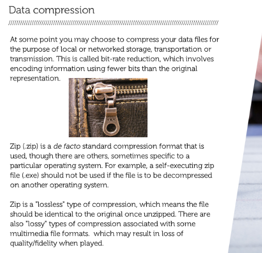

Prepare: Data collection
question Questionsobjectives Objectives
- What items are important during the data collection step?
- What data types are most common in research?
- identify preferred file formats for your research data;
- transform your files into a preferred format;
- discover sources for existing data;
- discover existing data yourself
- assess the usefulness of existing data;
- understand how a workflow leads to data products;
- estimate costs involved with managing your data;
- check the current and expected costs for your research data;
- write the data collection section for your data management plan.
time Time estimation: 1 hour
Introduction
Introduction to data collection
By now you will have obtained some idea of what research data management is all about. Now we will have a more in-depth look into the different phases of your research by starting with data collection.
Data collection involves understanding the different types of data you collect. Depending on the nature of your research, there are different methods of collecting data and thus different types of data.
Your data may be physical (paper records or archival forms) or digital (database contents or Excel data). The source of your data may be external, you collect it yourself or you generate it from a machine.
When you write your data management plan you will need to take into account the type of data you collect, the source of the data, and how you will process and analyse your data.
You can watch the video below, provided by TU Delft, about data collection. The video stops at 1:12.
Preferred formats for your research data
This part is based on the online Research Data Management training ‘MANTRA’ of The University of Edinburgh (CC BY: https://mantra.edina.ac.uk/) and Managing Data @ Melbourne.

The file formats you use to generate your research data will influence how you can manage them over time, i.e. a program or application must be able to recognise the file format in order to access your data within the file. For example, a web browser is able to process and display a file in the HTML file format so that it appears as a web page. If the browser encounters another file type, it may need to call on a special plug-in to view it. Or it may simply let you download the file to view if it can recognise it in another program.
To identify the file format, files usually have a file name extension, or suffix that follows a full stop in the file name and contains three or four letters, like for example:
TODO: add PDF with links to preferred file formats
- .txt text
- .pdf portable document format
- .jpg joint photographic experts group
- .csv comma separated values
- .html hypertext markup language
- .xml extensible markup language
- .rtf rich text format
question Question
Determine which format is proprietary and which is an open format
.xml .pdf .psd .odf .ppt .docx .csv .xls
Check your answers!
- Proprietary: .psd, .docx, .xls, .ppt
- Open format: .csv, .xml, .odf, .pdf
TODO: list of preferred formats
question Question
While file conversion or migration sometimes has to be done, there are also risks.
Which ones can you think of?
Check your answers!
- file size may change and even become surprisingly large
- blanks used as missing data code
- special characters and end of line returns may change
- relation among items in a table and among tables may be lost
- layers, color fidelity and resolution may be lost or changed in image files
- fonts, footnotes and links to other documents may change
- frame rate, sound quality, codecs and wrappers may be altered in multimedia files
- last characters in rows (due to row size limitations) may be altered
hands_on Hands On
Open the following .docx file to the preferred format .txt: PreferredFormatsExcersizePenguinDOC.docx
- Convert this docx file to the preferred format .txt
- Open the text file in an editor
- Is all formatting preserved OK?
Check your answers!
No, the format Microsoft Word creates saves the layout together with the textual and other elements. The .txt format created by Word is only the textual information in your file.
hands_on Hands On
Open the following .docx file to the preferred format .txt: PreferredFormatsExcersizePenguinDOC.docx
- Convert this docx file to the preferred format .odt
- Open the .odt file
- Is all formatting preserved OK?
Check your answers!
No, ODT files are formatted using the OASIS OpenDocument XML-based standard. When you open an OpenDocument Text file in Word, it might not have the same formatting as it did in the original application it was created in. This is because of the differences between applications that use the OpenDocument Format.

Discovering existing data
Where to discover existing data?
Watch the screencast below. In this screencast, you will be guided through different ways to find data.
hands_on Hands On
You have just learned that there are different places to find data. By actively searching the different places, you will get an understanding of the differences. Look at the different portals below. Some of them have been showcased in the screencast, some of them are additional.
Google - add “database OR registry OR dataset OR archive OR statistics” to your search
Registry of Research Data Repositories re3data - find appropriate repositories holding interesting data
ZanRan - search engine for tables and graphes within .pdf or .html on the internet
Elsevier Data Search - try out chip-seq drosophila
Google Dataset Search - try out chip-seq drosophila. Google Dataset Search indexes OmicsDI, an index providing a knowledge discovery framework across heterogeneous omics data (genomics, proteomics, transcriptomics and metabolomics).
Assess the usefullness of existing data
How useful is a dataset? Follow this short tutorial.
Assess the usefullness of existing data yourself
In the previous activity, the lecture described four main points to check if you want to reuse existing data:
- Condition for reuse
- Context
- Trustworthiness
- Persistence
In the following quizzes, take a closer look at the description or metadata of some datasets and assess the usefulness of these datasets yourself. As the description or metadata of datasets can be lacking in several different areas at the same time, it will be indicated per assignment on which of the four main points your focus should be.
hands_on Hands On
Can you re-use this dataset on Spatial Patterns of Water-dispersed Seed Deposition along Stream Riparian Gradients in DataverseNL?
- Maybe
- Yes
- No
Check your answer!
Yes, the Terms of use indicate that there is a Creative Commons license ‘Public Domain Dedication’, which means you can copy, modify, distribute and perform thge work, even for commercial purposes, all without asking permission.
hands_on Hands On
Can you re-use this weather dataset?
- Maybe
- Yes
- No
Check your answer!
Maybe, although the website states ‘We hope that you will enjoy using ClimaTempss as much as we have enjoyed developing it!”, there is no clear license or use agreement and directions on how to cite the data are lacking. The use has not been defined nor explained. In this case of re-use you should simply contact the creators.
hands_on Hands On
Given the follwing description of a dataset: can you assess the usefulness of this dataset to establish cholestasis (an unhealthy condition of the liver) parameters in livers in the age group of puberty through adulthood? Please focus on the context.
Description: “We measured livers for several parameters of cholestasis. The subjects were in advanced stages of liver cancer.”
- Maybe
- Yes
- No
Check your answer!
No, the dataset is not useful because the subjets have cancer. This should affect the values of parameters for cholestasis. You would rather have a dataset of healthy subjects.
hands_on Hands On
Would you trust the following dataset on heart rate under severe physical stress?
Heart rate (beats per minute): 124, 160, 240, 0, 120, 400, 198, 156, 167
Please focus on the trustworthiness.
- Maybe
- Yes
- No
Check your answer!
No, there are weird values in the dataset, a value of zero is unlikely. And overall, the values are on the high side.
hands_on Hands On
Is your research likely to be reproducible when you use the following the following infrastructure?
The datasets is created during a PhD. Conditions for use state that it is a dataset stored and shared by the PhD student on his university account.
- Maybe
- Yes
- No
Check your answer!
No, it is unlikely that the dataset can be reused since you do not have certainty that the files stored on the university file drives are availble for at least 10 years which is the current rule for data availablity.
Describe what kind of data you will generate
Having a clear view of what data you will generate will enable you to plan its management. You can create an overview of the data you produce or collect by drawing the data in a workflow, or noting down in a table.
Please watch the video below. Tessa Pronk will explain to you how to describe your data.
Order elements in your data flow
TODO: add H5P quiz
Copyright and Intellectual Property Rights (IPR) issues
Copyright is a form of intellectual property right which arises automatically if an original work is created. Copyright may affect the way data may be stored, shared and reused. You should ask yourself who the copyright holder of your datasets is, especially when you use existing data or when you collaborate with external parties.
Using someone else’s research data SURF provides a brief guide to determining what consent is necessary to reuse someone else’s data (see “A brief guide … someone else’s data” in the resources below)
Clarifying the ownership of your research data
TODO: change accordingly for VIB
Officially VIB, as your employer, is considered the rights holder to the research data you create. You, as a researcher, have the primary responsibility for taking care of the data. Questions on data exploitation may be even more important than those of ownership. Who can use the data? Who can publish it? Who can provide it to third parties?
We strongly recommend that you deal with the issues around data exploitation at an early stage of your research project. Write down agreements between yourself, your supervisor, project members and other interested parties in your Data Management Plan.
TODO: change accordingly
RDM Support offers you a Guide to legal instruments and agreements for research data management (see the Guide ‘Legal instruments and agreements’)
Confidential or privacy-sensitive data When your research project has received data under confidentiality or under legal privacy restrictions, you will have to identify and explain how you will deal with these restrictions in your data management plan (also see ‘Learning Unit: Handle - Data security’).
Costs involved with managing your data
TODO: https://www.uu.nl/en/research/research-data-management/guides/costs-of-data-management
The costs of data management and sharing activities must be included into your research, in terms of time and resources needed.
1. Data Management Cost Guide
When you plan your research you may not be able to oversee all costs involved. Nevertheless, it is useful to have an idea of possible costs at an early stage. You can use the Guide ‘Costs of Data Management’, which is a practical overview of possible costs per activity within each phase of the research process. Note: The Cost Guide offers cost indications and examples. These are not real prices.
2. Budget your data management costs
You are advised to budget the data management costs as separate data management costs. These costs are eligible for funding with funders like NWO and the European Commission, as long as the costs are invoiced before the end of the project.
3. Planning can save time and money
Planning an early start for certain activities within your research project can lower the costs for data management in the run of your project. You can save time by:
Properly describing your data while collecting it, instead of doing it afterwards Choosing the right file format so that file conversion afterwards is not necessary Hiring an experienced data manager Spending time to think about data activities beforehand can help prevent unexpected extra efforts and costs later on in your research project.
Check the current and expected costs for your research data
You have just learned that in many parts of a research project there are data related costs. These costs depend on the type and volume of data you produce, analyse and store.
TODO: link to file (calculation) https://lll-platform.uu.nl/pluginfile.php/4907/format_elevated/resource/0/Cost%20overview.docx
Write your data management plan for your data collection
Go to DMPonline and open your draft data management plan created in the Introduction.
You have now completed the module Data collection. You should be able to complete the following questions in the section Data collection:
- Will you use existing data?
- What data will you collect or create?
- How will the data be collected or created?
- How will you manage rights issues?
- What are the costs involved in managing and storing your data?
keypoints Key points
- The take-home messages
- They will appear at the end of the tutorial
Useful literature
Further information, including links to documentation and original publications, regarding the tools, analysis techniques and the interpretation of results described in this tutorial can be found here.